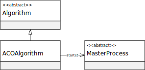

Package eu.andredick.aco.algorithm
Class AbstractAlgorithm
- java.lang.Object
-
- eu.andredick.aco.algorithm.AbstractAlgorithm
-
- All Implemented Interfaces:
java.lang.Runnable
- Direct Known Subclasses:
ACOAlgorithm
public abstract class AbstractAlgorithm extends java.lang.Object implements java.lang.Runnable
Schablone für Algorithmen, deren Instanzen parallel ausgeführt werden können (Runnable).
Ein realer Algorithmus leitet diese abstrakte Klasse ab und
implementiert in der Methodego()den Start seines Ablaufes.
-
-
Constructor Summary
Constructors Constructor Description AbstractAlgorithm()
-
Method Summary
All Methods Instance Methods Abstract Methods Concrete Methods Modifier and Type Method Description abstract StatisticsgetStatistics()Liefert Statistiken zum Ablauf des Algorithmusprotected abstract voidgo()Abstrakte Methode zum Start des Ablaufes eines Algorithmus.
Die Methode ist bei Ableitung der abstrakten Klasse zu implementieren.
Sie wird nicht von aussen gestartet (protected) sondern in der Methode "run()" aufgerufen.protected voidpostprocessing()Nachbereitende allgemeine Operationen des Algorithmus.
Die Operationen sind nicht von einem konkreten Algorithmus abhängig.
In der vorliegenden Version werd die Endzeit des Algorithmusablaufes initialisiert und
die Dauer des Ablaufes auf der Konsole ausgegeben.protected voidpreprocessing()Vorbereitende allgemeine Operationen des Algorithmus.
Die Operationen sind nicht von einem konkreten Algorithmus abhängig.
In der vorliegenden Version werd die Startzeit des Algorithmusablaufes initialisiert.voidrun()Methode zum Starten des Algorithmus.
Zunächst werden vorbereitende Operationen durchpreprocessing()ausgeführt.
Anschließend wird die zu implementierende Methodego()gestartet.
Schließlich werden durchpostprocessing()nachbereitende Operationen ausgeführt.
-
-
-
Constructor Detail
-
AbstractAlgorithm
public AbstractAlgorithm()
-
-
Method Detail
-
run
public void run()
Methode zum Starten des Algorithmus.
Zunächst werden vorbereitende Operationen durchpreprocessing()ausgeführt.
Anschließend wird die zu implementierende Methodego()gestartet.
Schließlich werden durchpostprocessing()nachbereitende Operationen ausgeführt.- Specified by:
runin interfacejava.lang.Runnable
-
preprocessing
protected void preprocessing()
Vorbereitende allgemeine Operationen des Algorithmus.
Die Operationen sind nicht von einem konkreten Algorithmus abhängig.
In der vorliegenden Version werd die Startzeit des Algorithmusablaufes initialisiert.
-
go
protected abstract void go()
Abstrakte Methode zum Start des Ablaufes eines Algorithmus.
Die Methode ist bei Ableitung der abstrakten Klasse zu implementieren.
Sie wird nicht von aussen gestartet (protected) sondern in der Methode "run()" aufgerufen.
-
postprocessing
protected void postprocessing()
Nachbereitende allgemeine Operationen des Algorithmus.
Die Operationen sind nicht von einem konkreten Algorithmus abhängig.
In der vorliegenden Version werd die Endzeit des Algorithmusablaufes initialisiert und
die Dauer des Ablaufes auf der Konsole ausgegeben.
-
getStatistics
public abstract Statistics getStatistics()
Liefert Statistiken zum Ablauf des Algorithmus- Returns:
- Statistiken zum Ablauf des Algorithmus
-
-